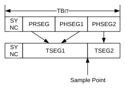

NBR is limited by the propagation delay of the CAN network (see Propagation Delay). In the data phase, only one transmitter remains; therefore, the bit rate can be increased. The transmitting node always compares the intended transmitted bits with the actual bits on the CAN bus. The propagation delay in the data phase can be longer than the bit time. In this case, the data bits are sampled at a Secondary Sample Point (SSP) (see Transmitter Delay Compensation (TDC)).
NBR is the number of bits per second during the arbitration phase. It is the inverse of the Nominal Bit Time (NBT) (see Equation 38-1).
DBR is the number of bits per second during the data phase. It is the inverse of the Data Bit Time (DBT) (see Equation 38-2).
The Baud Rate Prescaler (BRP) is used to divide the SYSCLK. The divided SYSCLK is used to generate the bit times. There are two prescalers: NBRP for the Nominal Bit Rate Prescaler and DBRP for the Data Bit Rate Prescaler. The Time Quanta (NTQ and DTQ) are selected as shown in Equation 38-3 and Equation 38-4.
CAN bit times have four segments, as specified in ISO11898-1:2015 (see Figure 38-3).
Synchronization Segment (SYNC) – Synchronizes the different nodes connected on the CAN bus. A bit edge is expected to be within this segment. The Synchronization Segment is always one TQ.
Propagation Segment (PRSEG) – Compensates for the propagation delay on the bus. PRSEG has to be longer than the maximum propagation delay.
Phase Segment 1 (PHSEG1) – Compensates for errors that may occur due to phase shifts in the edges. The time segment may be automatically lengthened during resynchronization to compensate for the phase shift.
Phase Segment 2 (PHSEG2) – Compensates for errors that may occur due to phase shifts in the edges. The time segment may be automatically shortened during resynchronization to compensate for the phase shift.
In the Bit Time registers, PRSEG and PHSEG1 are combined to create TSEG1. PHSEG2 is called TSEG2. Each segment has multiple Time Quanta (TQ). The sample point lies between TSEG1 and TSEG2. Table 38-1 and Table 38-2 show the ranges for the bit time configuration parameters.

The total number of TQ in a bit time is programmable and can be calculated using Equation 38-5 and Equation 38-6.
| Segment | Minimum | Maximum |
|---|---|---|
| NSYNC | 1 | 1 |
| NTSEG1 | 2 | 256 |
| NTSEG2 | 1 | 128 |
| NSJW | 1 | 128 |
| NTQ per Bit | 4 | 385 |
| Segment | Minimum | Maximum |
|---|---|---|
| DSYNC | 1 | 1 |
| DTSEG1 | 1 | 32 |
| DTSEG2 | 1 | 16 |
| DSJW | 1 | 16 |
| DTQ per Bit | 3 | 49 |